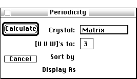

Distributed By: Virtual Labs
Periodicity Set-Up Dialog Box
PATH...File Menu:New:Tables:Periodicity...

Periodicity Table Setup Dialog Box
The Periodicity Set-Up Dialog Box is used to set the criteria necessary
to calculate a list of Periodicities and first order ring diameters. No
selection criteria is used and all periodicities for the relevant poles
are listed. It is only necessary to select the crystal and the maximum index
for the [uvw]s. See § V.H.3 for a further explanation.
Note: Desktop Microscopist does not have the capacity to recognize when
a particular zone axis will have missing rings due to extinction conditions.
Care must be taken when using these results for experimental comparison.
To calculate the radius of the first order zone, Desktop Microscopist uses
the electron or x-ray value defined under the Parameter menu. The default
case is the electron beam. If the x-ray beam has been selected, the characteristic
wavelength and not the maximum accelerating voltage is used for the calculation.
Author: J.ames T.
Stanley
 Desktop
Manual:Dialog Boxes
Desktop
Manual:Dialog Boxes
Distributed By: Virtual Labs
Last Updated:1/12/96 Sat, Apr 27, 1996